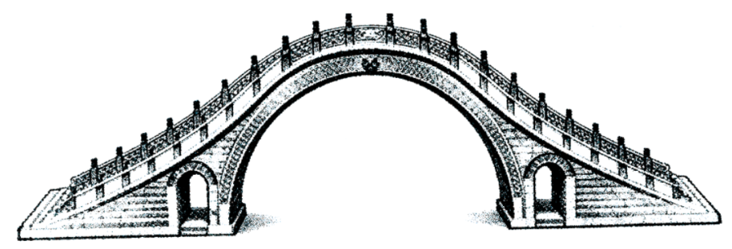

练习 · 非连续文本阅读
赵州桥与港珠澳大桥
对照赵州桥示意图与文字，比较古今桥梁的设计。
导读
赵州桥与港珠澳大桥。阅读时留意不同材料、事例与观点之间的联系。
原文
原文按结构分节；随文内容可定位至对应段落。
桥梁比较：介绍赵州桥的结构及港珠澳大桥的工程特点。
阅读下面材料，完成小题。
【材料一】
A赵州桥非常雄伟，全长50.82米，两端宽9.6米，中部略窄，宽约9米。桥的设计完全合乎科学原理，施工技术更是巧妙绝伦。唐朝的张嘉贞说它“制造奇特，人不知其所以为”。这座桥的特点是：（一）全桥只有一个大拱，长达37.02米，在当时可算是世界上最长的石拱。桥洞不是普通半圆形，而是像一张弓，因而大拱上面的道路没有陡坡，便于车马上下。（二）大拱的两肩上，各有两个小拱。这个创造性的设计，不但节约了石料，减轻了桥身的重量，而且在河水暴涨的时候，还可以增加桥洞的过水量，减轻洪水对桥身的冲击。同时，拱上加拱，桥身也更美观。……赵州桥高度的技术水平和不朽的艺术价值，充分显示了我国劳动人民的智慧和力量。桥的主要设计者李春就是一位杰出的工匠，在桥头的碑文里刻着他的名字。
【材料二】
①在珠江口辽阔的海面上，一道蜿蜒的钢铁巨龙划破波涛，连接香港、珠海与澳门。这，就是港珠澳大桥——一项被誉为“现代世界七大奇迹”之一的超级工程。它的建成，远非一座桥梁那么简单，它淋漓尽致地诠释了中华民族穿越古今的宏伟志向与卓越智慧。
②如果全程建桥，将阻碍巨型轮船通行，并影响香港机场航班起降。中国工程师创造性地提出了“桥、岛、隧集群方案”：6.7公里的沉管隧道穿行海底，连接东西两侧的两座人工岛，再以长达22.9公里的桥梁延伸两岸。这座跨越56公里海域的大桥，B将粤港澳的车程从3小时缩短至30分钟，打破了地理屏障，建成了“一小时生活圈”。
③建设者还专门为中华白海豚“让路”，投入大量资源进行监测与保护，实现了“大桥通车，白海豚不搬家”的承诺。这体现了“取之有度，用之有节”的古老生态智慧在现代工程中的延续。同时，大桥从设计之初就秉持开放合作精神，汇聚了全球顶尖专家与企业的智慧，最终成果亦服务于区域和世界，践行了“美美与共”的天下情怀。
④港珠澳大桥，这座穿越历史烟云、矗立于新时代潮头的超级工程，最终成为一座精神的坐标。它的建成，标志着中国正从“桥梁大国”迈向“桥梁强国”，彰显了新时代中国攀登工程科技高峰、服务人民美好生活的自信与决心。它承载了推动粤港澳大湾区深度融合、港澳与内地协同发展、打造世界级城市群的国家战略雄心。港珠澳大桥的每一寸钢索、每一方混凝土，都凝结着我们的“中国梦”。
第1题 · 图文对照
下图是小语同学依据【材料一】为赵州桥画的示意图，请你指出图中在桥梁结构方面的两处错误，并联系文本说一说这样设计可能带来的后果。

参考答案1展开 / 收起
参考作答
大拱两肩应各有两个小拱，图中各画一个；主拱应像弓而非普通半圆。小拱减少会影响节省石料、减重和泄洪；图示半圆拱在其他条件近似时可能使桥面更陡，影响通行。
审题与考查点
结合题目限定，回到材料寻找依据，再按要求作答。
文本分析
推导查看证据 ↗
对照原文中的弓形大拱及两肩各两个小拱，指出图中主拱和小拱的差异，再依据文中设计功能分析可能影响。
第2题 · 说明方法
文中画横线的两句话都用到一些数据，但用法和作用却不相同，试分析这两处数据的不同用法和作用。
参考答案2展开 / 收起
参考作答
A列举长度、宽度，具体说明赵州桥的规模；B比较通行时间，突出大桥缩短车程、便利区域联系的作用。
审题与考查点
结合题目限定，回到材料寻找依据，再按要求作答。
文本分析
推导查看证据 ↗
A使用桥梁尺寸说明规模，B比较通行时间说明交通作用；两处数字所回答的问题不同。
第3题 · 情境表达
依据材料补全下面的对话。
小爱：从赵州桥到港珠澳大桥，中国桥梁事业的飞速发展就是中国发展的缩影。它们虽诞生于不同的年代，却都凝聚了中华民族的非凡志向与卓越智慧。
小青：赵州桥的建设初衷融合了政治、经济、军事与技术的多重考量，是人类桥梁史上的里程碑。
小山：港珠澳大桥的建设初衷则是（1）______
小青：赵州桥高度的技术水平和不朽的艺术价值，显示了我国劳动人民的智慧。小山，你能结合一个实例谈一谈港珠澳大桥设计或建造中所蕴含的智慧吗？
小山：（2）______
小爱：从赵州桥到港珠澳大桥，变的是时代背景、技术手段与工程规模，不变的是中华民族攻坚克难、追求卓越的雄心壮志，以及因地制宜、勇于创新的无穷智慧。这两座桥，正是中华民族伟大梦想与创造精神的不朽丰碑。
参考答案3展开 / 收起
参考作答
（1）便利粤港澳交通联系，促进区域协同发展。
（2）例如采用桥、岛、隧集群方案，兼顾航道与机场运行；或在工程中监测保护中华白海豚，兼顾建设与生态。
审题与考查点
结合题目限定，回到材料寻找依据，再按要求作答。
文本分析
推导查看证据 ↗
材料提到区域联系、桥岛隧方案和生态保护；结合对话的询问对象选择适当信息。材料主要说明作用，不能把每一结果都无条件反推为建设初衷。